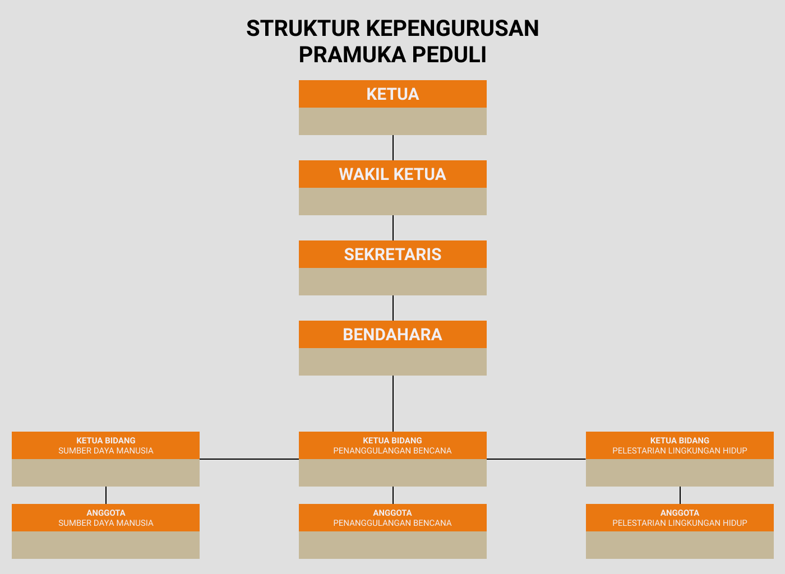

Pramuka Peduli adalah bentuk kepedulian pramuka dalam menghadapi situasi yang tidak menguntungkan bagi sebagian masyarakat Indonesia. Kepedulian pramuka diaplikasikan dalam bentuk aksi pramuka peduli yaitu kegiatan bakti Pramuka bersama-sama masyarakat, pemerintah, serta Lembaga Swadaya dan Organisasi Masyarakat lainnya yang terintegrasi dan dikoordinasikan oleh Gerakan Pramuka untuk mengembangkan sumber daya manusia, penanggulangan bencana, dan pelestarian lingkungan hidup.
